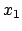
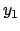
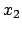
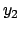
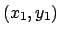
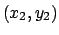

Next: 3.4 Sundry Items (Arrows, Up: 3.3 Plotting Previous: 3.3.4 Colour Plotting Contents Index
| plot linewidths | -- | For an unknown
reason, gnuplot doesn't allow set linewidth 2 as valid syntax. This
setting is allowed to be made in PyXPlot. Furthermore, set
pointlinewidth 2 will set the linewidth to be used when drawing data
points. A similar effect can be achieved via:
plot sin(x) with points pointlinewidth 2 In both cases, the abbreviation plw is valid. |
||||||||
| dots plot style | -- | When using the
dots style, for example:
plot sin(x) with dots the size of the plotted dots can be varied with the pointsize modifier, unlike in gnuplot, where the dots were of a fixed size. For example, to display big dots, use:
plot sin(x) with dots pointsize 10 |
||||||||
| select keyword | -- | As well as the index,
using and every keywords which gnuplot used to allow users to
plot subsets of data from datafiles, PyXPlot also has a further modifier,
select. This can be used to plot only those datapoints in a datafile
which specify some given criterion. For example:
plot 'datafile' select ($8>5) plot sin(x) select (($1>0)and($2>0)) plot sin(x) select ($1>0) select ($2>0) |
||||||||
| In the third example, two select criteria are given; it is entirely equivalent to the statement above it. Note that whitespace is not permitted in select criteria. The select modifier has many applications, including plotting two-dimensional slices from three-dimensional datasets, and selecting certain subsets of datapoints from a datafile for plotting. | ||||||||||
| Logical operators such as and, or and not can be used, as seen in the second example above; indeed, any expression which is valid Python can be used. | ||||||||||
| arrows plot style | -- | A new plotting style, arrows,
is available, which takes four columns of data, , , , , and
for each data point draws an arrow from the point  to .
Three different kinds of arrows can be drawn: ones with normal arrow heads,
ones with no arrow heads, which just appear as lines, and ones with arrow heads
on both ends. The syntax is:
plot 'datafile' with arrows_head plot 'datafile' with arrows_nohead plot 'datafile' with arrows_twohead |
||||||||
| The syntax `with arrows' is a shorthand for `with arrows_head'. | ||||||||||
| lower and upper limit datapoints | -- | PyXPlot can plot datapoints using the
standard upper- and lower-limit symbols. No special syntax is required for
this; these symbols are pointtypes3.6 12 and 13 respectively,
obtained as follows:
plot 'upperlimits' with points pointtype 12 plot 'lowerlimits' with points pointtype 13 |
||||||||
| plotting functions with errorbars and other plot styles | -- | In gnuplot,
when a function (as opposed to a datafile) is plotted, only those plot styles
which accept two columns of data can be used - for example, lines or
points. It is not possible to plot a function with errorbars, for
example. In PyXPlot, by contrast, this is possible using the following syntax:
plot f(x):g(x) with yerrorbars |
||||||||
Two functions are supplied, separated by a colon; plotting proceeds as if a
datafile had been supplied, containing values of
plot f(x):g(x) using 2:3 |
||||||||||
| Here, would be plotted on the |
||||||||||
| horizontally arranged datafiles | -- | The command syntax for plotting
columns of datafiles against one another was previously described in
section 2.3. In an extension of gnuplot's interface, it is
also possible to plot rows of data against one another in
horizontally-arranged datafiles. For this, the keyword `rows' is
placed after the using modifier:
plot 'datafile' index 1 using rows 1:2 |
||||||||
| The syntax `using columns' is also accepted, to specify the default
behaviour of plotting columns against one another:
plot 'datafile' index 1 using columns 1:2 |
||||||||||
| When plotting horizontally-arranged datafiles, the meanings of the index and every modifiers (see section 2.3) are altered slightly. The former continues to refer to vertical blocks of data separated by two blank lines. Blocks, as referenced in the every modifier, continue to be vertical blocks of datapoints, separated by single blank lines. The row numbers passed to the using modifier are counted from the top of the current block. | ||||||||||
| However, the line-numbers specified in the every modifier - i.e.
variables |
||||||||||
plot 'datafile' using rows 1:2 every 2::3::9 |
||||||||||
| would plot the data in row 2 against that in row 1, using only the values in every other column, between columns 3 and 9. | ||||||||||
| errorbars | -- | In gnuplot, when one used
errorbars, one could either specify the size of the errorbar, or the min/max
range of the errorbar. Both of these usages shared a common syntax, and
gnuplot's behaviour depended upon the number of data columns provided:
plot 'datafile' with yerrorbars |
||||||||
| Given a datafile with three columns, this would take the third column
to indicate the size of the |
||||||||||
| To avoid confusion, a different syntax is adopted in PyXPlot. The syntax:
plot 'datafile' with yerrorbars |
||||||||||
| now always assumes the third column of the datafile to indicate the
size of the errorbar, regardless of whether a fourth is present. The syntax:
plot 'datafile' with yerrorrange |
||||||||||
| always assumes the third and fourth columns to indicate the min/max
range of the errorbar.
|
||||||||||
|
||||||||||
|
||||||||||
| datafile wildcards | -- | PyXPlot allows the wildcards `*' and `?' to be used both in the filenames of datafiles following the plot command, and also when specifying command files on the commandline and with the load command. For example, the following would plot all datafiles in the current directory with a `.dat' suffix, using the same plot options: | ||||||||
plot '*.dat' with linewidth 2 In the legend, full filenames are displayed, allowing the datafiles to be distinguished. |
||||||||||
| As in gnuplot, a blank filename passed to the plot command causes the last used datafile to be used again. | ||||||||||
| backing up overwritten files | -- | By default, when plotting to a file, if the output filename matches that of an existing file, that file is overwritten. This behaviour may be changed with the set backup command, which has syntax: | ||||||||
set backup set nobackup |
||||||||||
| When this switch is turned on, pre-existing files will be renamed with a tilda at the end of their filenames, rather than being overwritten. |
Dominic Ford 2006-09-09